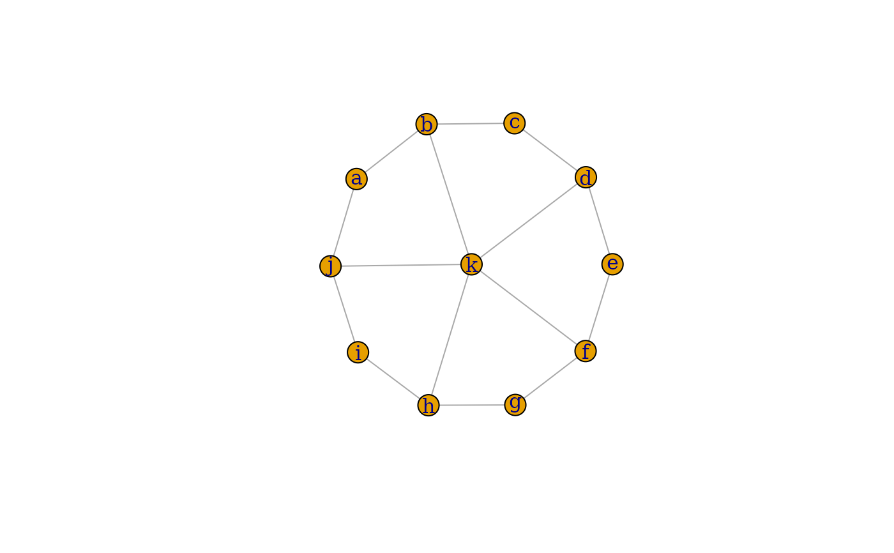

The difference of two graphs are created.
Usage
# S3 method for class 'igraph'
difference(big, small, byname = "auto", ...)Arguments
- big
The left hand side argument of the minus operator. A directed or undirected graph.
- small
The right hand side argument of the minus operator. A directed ot undirected graph.
- byname
A logical scalar, or the character scalar
auto. Whether to perform the operation based on symbolic vertex names. If it isauto, that meansTRUEif both graphs are named andFALSEotherwise. A warning is generated ifautoand one graph, but not both graphs are named.- ...
Ignored, included for S3 compatibility.
Details
difference() creates the difference of two graphs. Only edges
present in the first graph but not in the second will be be included in the
new graph. The corresponding operator is %m%.
If the byname argument is TRUE (or auto and the graphs
are all named), then the operation is performed based on symbolic vertex
names. Otherwise numeric vertex ids are used.
difference() keeps all attributes (graph, vertex and edge) of the
first graph.
Note that big and small must both be directed or both be
undirected, otherwise an error message is given.
See also
Other functions for manipulating graph structure:
+.igraph(),
add_edges(),
add_vertices(),
complementer(),
compose(),
connect(),
contract(),
delete_edges(),
delete_vertices(),
difference(),
disjoint_union(),
edge(),
igraph-minus,
intersection(),
intersection.igraph(),
path(),
permute(),
rep.igraph(),
reverse_edges(),
simplify(),
union(),
union.igraph(),
vertex()
Author
Gabor Csardi csardi.gabor@gmail.com
Examples
## Create a wheel graph
wheel <- union(
make_ring(10),
make_star(11, center = 11, mode = "undirected")
)
V(wheel)$name <- letters[seq_len(vcount(wheel))]
## Subtract a star graph from it
sstar <- make_star(6, center = 6, mode = "undirected")
V(sstar)$name <- letters[c(1, 3, 5, 7, 9, 11)]
G <- wheel %m% sstar
print_all(G)
#> IGRAPH 4f617aa UN-- 11 15 --
#> + attr: name_1 (g/c), name_2 (g/c), mutual (g/l), circular (g/l), mode
#> | (g/c), center (g/n), name (v/c)
#> + edges (vertex names):
#> a -- b, j
#> b -- a, c, k
#> c -- b, d
#> d -- c, e, k
#> e -- d, f
#> f -- e, g, k
#> g -- f, h
#> h -- g, i, k
#> i -- h, j
#> j -- a, i, k
#> k -- b, d, f, h, j
plot(G, layout = layout_nicely(wheel))
